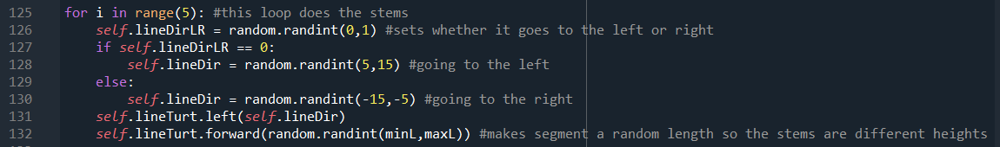

quiet-hillsides.jpg
Quiet Hillsides utilizes a computer program to generate a nostalgic art piece with a few randomized elements. The art is visualized using Turtle Graphics, and the code needed to draw it is in Python.

Each time the code is run, the computer will generate slightly randomized flowers. Certain elements, such as the way the stems look and the size of the petals, use variables that are randomized. This then insures that each piece will look slightly different, and will have a sense of uniqueness much like real flowers do. Quiet hillsides draws upon a childlike fascination with dandelions, and creates art to convey that nostalgia.
Different iterations of the project experimented with what elements were to be randomized during each drawing. Originally, many elements were randomized, but that led to a chaotic landscape with conflicting colors. The final code has a set palette and many small random elements, so the final art piece looks aesthetically pleasing.